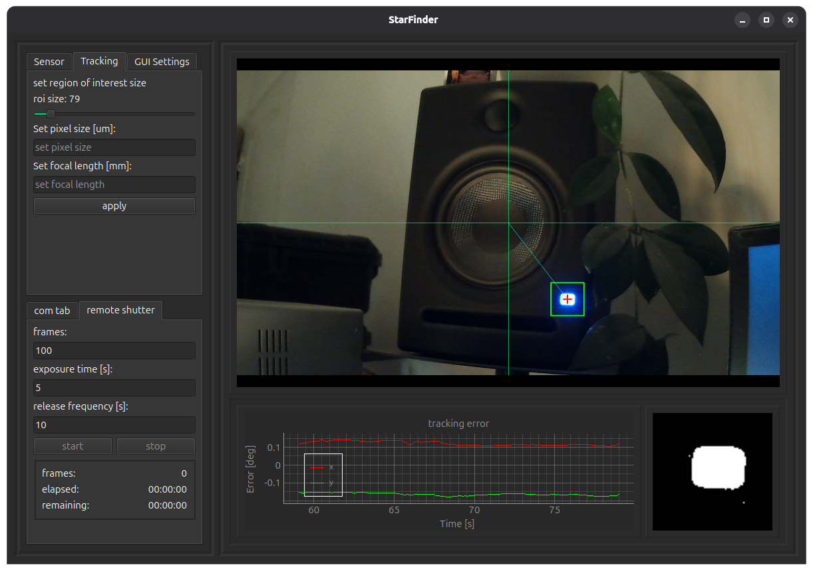

Links
GitHub repo: GitHub
GitHub repo: GitHub


A python-based star-tracking application that functions by locating the centroids of bright spots using thresholding within a defined Region of Interest (ROI). It is designed to send direct commands to the tracker and interface with the camera to trigger exposure timing.